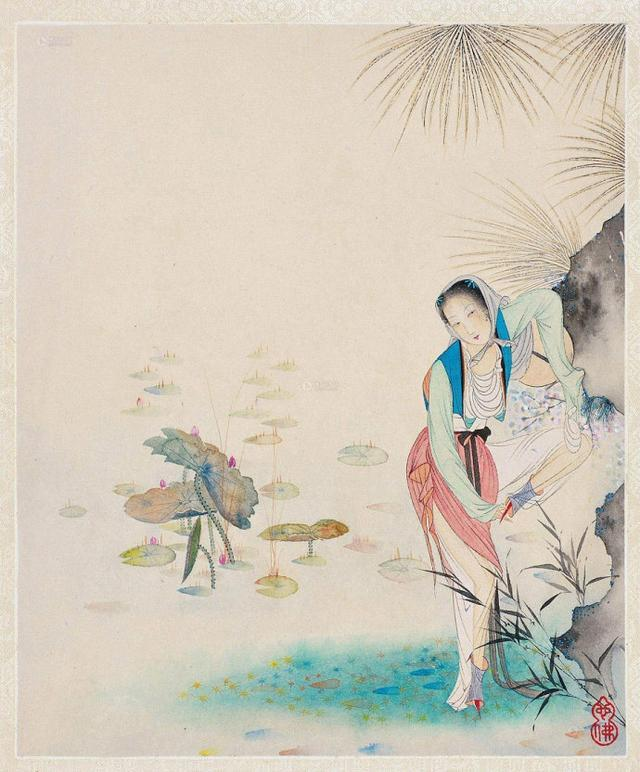

第四回 赴巫山潘氏幽欢 闹茶坊郓哥义愤#

诗曰：
璇闺绣户斜光入，千金女儿倚门立。横波美目虽后来，罗袜遥遥不相及。
闻道今年初避人，珊珊镜挂长随身。愿得侍儿为道意，后堂罗帐一相亲。
话说王婆拿银子出门，便向妇人满面堆下笑来，说道：“老身去那街上取瓶儿来，有劳娘子相待官人坐一坐。壶里有酒，没便再筛两盏儿，且和大官人吃着，老身直去县东街，那里有好酒买一瓶来，有好一歇儿耽搁。”妇人听了说：“干娘休要去，奴酒不多用了。”婆子便道：“阿呀！娘子，大官人又不是别人，没事相陪吃一盏儿，怕怎的！”妇人口里说“不用了”坐着却不动身。婆子一面把门拽上，用索儿拴了，倒关他二人在屋里。当路坐了，一头续着锁。
这妇人见王婆去了，倒把椅儿扯开一边坐着，却只偷眼睃看。西门庆坐在对面，一径把那双涎瞪瞪的眼睛看着他，便又问道：“却才到忘了问娘子尊姓？”妇人便低着头带笑的回道：“姓武。”西门庆故做不听得，说道：“姓堵？”那妇人却把头又别转着，笑着低声说道：“你耳朵又不聋。”西门庆笑道：“呸，忘了！正是姓武。只是俺清河县姓武的却少，只有县前一个卖饮饼的三寸丁姓武，叫做武大郎，敢是娘子一族么？”妇人听得此言，便把脸通红了，一面低着头微笑道：“便是奴的丈夫。”西门庆听了，半日不做声，呆了脸，假意失声道屈。妇人一面笑着，又斜瞅了他一眼，低声说道：“你又没冤枉事，怎的叫屈？”西门庆道：“我替娘子叫屈哩！”却说西门庆口里娘子长娘子短，只顾白嘈。这妇人一面低着头弄裙子儿，又一回咬着衫袖口儿，咬得袖口儿格格驳驳的响，要便斜溜他一眼儿。只见这西门庆推害热，脱了上面绿纱褶子道：“央烦娘子替我搭在干娘护炕上。”这妇人只顾咬着袖儿别转着，不接他的，低声笑道：“自手又不折，怎的支使人！”西门庆笑着道：“娘子不与小人安放，小人偏要自己安放。”一面伸手隔桌子搭到床炕上去，却故意把桌上一拂，拂落一只箸来。却也是姻缘凑着，那只箸儿刚落在金莲裙下。西门庆一面斟酒劝那妇人，妇人笑着不理他。他却又待拿起箸子起来，让他吃菜儿。寻来寻去不见了一只。这金莲一面低着头，把脚尖儿踢着，笑道：“这不是你的箸儿！”西门庆听说，走过金莲这边来道：“原来在此。”蹲下身去，且不拾箸，便去他绣花鞋头上只一捏。那妇人笑将起来，说道：“怎这的罗唣！我要叫了起来哩！”西门庆便双膝跪下说道：“娘子可怜小人则个！”一面说着，一面便摸他裤子。妇人叉开手道：“你这歪厮缠人，我却要大耳刮子打的呢！”西门庆笑道：“娘子打死了小人，也得个好处。”于是不由分说，抱到王婆床炕上，脱衣解带，共枕同欢。却说这妇人自从与张大户勾搭，这老儿是软如鼻涕脓如酱的一件东西，几时得个爽利！就是嫁了武大，看官试想，三寸丁的物事，能有多少力量？今番遇了西门庆，风月久惯，本事高强的，如何不喜？但见：
交颈鸳鸯戏水，并头鸾凤穿花。喜孜孜连理枝生，美甘甘同心带结。一个将朱唇紧贴，一个将粉脸斜偎。罗袜高挑，肩膀上露两弯新月；金钗斜坠，枕头边堆一朵乌云。誓海盟山，搏弄得千般旖妮；羞云怯雨，揉搓的万种妖娆。恰恰莺声，不离耳畔。津津甜唾，笑吐舌尖。杨柳腰脉脉春浓，樱桃口微微气喘。星眼朦胧，细细汗流香玉颗；酥胸荡漾，涓涓露滴牡丹心。直饶匹配眷姻谐，真个偷情滋味美。
当下二人云雨才罢，正欲各整衣襟，只见王婆推开房门入来，大惊小怪，拍手打掌，低低说道：“你两个做得好事！”西门庆和那妇人都吃了一惊。那婆子便向妇人道：“好呀，好呀！我请你来做衣裳，不曾交你偷汉子！你家武大郎知，须连累我。不若我先去对武大说去。”回身便走。那妇人慌的扯住她裙子，红着脸低了头，只得说声：“干娘饶恕！”王婆便道：“你们都要依我一件事，从今日为始，瞒着武大，每日休要失了大官人的意。早叫你早来，晚叫你晚来，我便罢休。若是一日不来，我便就对你武大说。”那妇人羞得要不的，再说不出来。王婆催逼道：“却是怎的？快些回覆我。”妇人藏转着头，低声道：“来便是了。”王婆又道：“西门大官人，你自不用老身说得，这十分好事已都完了，所许之物，不可失信，你若负心，我也要对武大说。”西门庆道：“干娘放心，并不失信。”婆子道：“你每二人出语无凭，要各人留下件表记拿着，才见真情。”西门庆便向头上拔下一根金头簪来，插在妇人云髻上。妇人除下来袖了，恐怕到家武大看见生疑。妇人便不肯拿甚的出来，却被王婆扯着袖子一掏，掏出一条杭州白绉纱汗巾，掠与西门庆收了。三人又吃了几杯酒，已是下午时分。那妇人起身道：“奴回家去罢。”便丢下王婆与西门庆，踅过后门归来。先去下了帘子，武大恰好进门。
且说王婆看着西门庆道：“好手段么？”西门庆道：“端的亏了干娘，真好手段！”王婆又道：“这雌儿风月如何？”西门庆道：“色系子女不可言。”婆子道：“她房里弹唱姐儿出身，甚么事儿不久惯知道！还亏老娘把你两个生扭做夫妻，强撮成配。你所许老身东西，休要忘了。”西门庆道：“我到家便取银子送来。”王婆道：“眼望旌捷旗，耳听好消息。不要交老身棺材出了讨挽歌郎钱。”西门庆一面笑着，看街上无人，带上眼纱去了。不在话下。
次日，又来王婆家讨茶吃。王婆让坐，连忙点茶来吃了。西门庆便向袖中取出一锭十两银子来，递与王婆。但凡世上人，钱财能动人意。那婆子黑眼睛见了雪花银子，一面欢天喜地收了，一连道了两个万福，说道：“多谢大官人布施！”因向西门庆道：“这咱晚武大还未出门，待老身往她家推借瓢，看一看。”一面从后门踅过妇人家来。妇人正在房中打发武大吃饭，听见叫门，问迎儿：“是谁？”迎儿道：“是王奶奶来借瓢。”妇人连忙迎将出来道：“干娘，有瓢，一任拿去。且请家里坐。”婆子道：“老身那边无人。”因向妇人使手势，妇人就知西门庆来了。婆子拿瓢出了门，一力撺掇武大吃了饭，挑担出去了。先到楼上从新妆点，换了一套艳色新衣，吩咐迎儿：“好生看家，我往你王奶家坐一坐就来。若是你爹来时，就报我知道。若不听我说，打下你个小贱人下截来。”迎儿应诺不题。
妇人一面走过王婆茶坊里来。正是：
合欢桃杏春堪笑，心里原来别有仁。
有词单道这双关二意：
这瓢是瓢，口儿小身子儿大。你幼在春风棚上恁儿高，到大来人难要。他怎肯守定颜回甘贫乐道，专一趁东风，水上漂。也曾在马房里喂料，也曾在茶房里来叫，如今弄得许由也不要。赤道黑洞洞葫芦中卖的甚么药？
那西门庆见妇人来了，如天上落下来一般，两个并肩叠股而坐。王婆一面点茶来吃了，因问：“昨日归家，武大没问甚么？”妇人道：“他问干娘衣服做了不曾，我说道衣服做了，还与干娘做送终鞋袜。”说毕，婆子连忙安排上酒来，摆在房内，二人交杯畅饮。这西门庆仔细端详那妇人，比初见时越发标致。吃了酒，粉面上透出红白来，两道水鬓描画的长长的。端的平欺神仙，赛过嫦娥。
动人心红白肉色，堪人爱可意裙钗。裙拖着翡翠纱衫，袖挽泥金带。喜孜孜宝髻斜歪。恰便似月里嫦娥下世来，不枉了千金也难买。
西门庆夸之不足，搂在怀中，掀起他裙来，看见他一对小脚穿着老鸦缎子鞋儿，恰刚半叉，心中甚喜。一递一口与他吃酒，嘲问话儿。妇人因问西门庆贵庚，西门庆告他说：“二十七岁，七月二十八日子时生。”妇人问：“家中有几位娘子？”西门庆道：“除下拙妻，还有三四个身边人，只是没一个中我意的。”妇人又问：“几位哥儿？”西门庆道：“只是一个小女，早晚出嫁，并无娃儿。”西门庆嘲问了一回，向袖中取出银穿心金裹面盛着香茶木樨饼儿来，用舌尖递送与妇人。两个相搂相抱，鸣咂有声。那婆子只管往来拿菜筛酒，那里去管他闲事，由着二人在房内做一处取乐玩耍。少顷吃得酒浓，不觉烘动春心，西门庆色心辄起，露出腰间那话，引妇人纤手扪弄。原来西门庆自幼常在三街四巷养婆娘，根下犹带着银打就，药煮成的托子。那话煞甚长大，红赤赤黑须，直竖竖坚硬，好个东西：
一物从来六寸长，有时柔软有时刚。软如醉汉东西倒，硬似风僧上下狂。
出牝入阴为本事，腰州脐下作家乡。天生二子随身便，曾与佳人斗几场。
少顷，妇人脱了衣裳。西门庆摸见牝户上并无毳毛，犹如白馥馥、鼓蓬蓬发酵的馒头，软浓浓、红绉绉出笼的果馅，真个是千人爱万人贪一件美物：
温紧香干口赛莲，能柔能软最堪怜。喜便吐舌开颜笑，困便随身贴股眠。
内裆县里为家业，薄草涯边是故园。若遇风流轻俊子，等闲战斗不开言。
话休饶舌。那妇人自当日为始，每日踅过王婆家来，和西门庆做一处，恩情似漆，心意如胶。自古道：好事不出门，恶事传千里。不到半月之间，街坊邻舍都晓的了，只瞒着武大一个不知。正是：
自知本分为活计，那晓防奸革弊心。
话分两头。且说本县有个小的，年方十五六岁，本身姓乔，因为做军在郓州生养的，取名叫做郓哥。家中只有个老爹，年纪高大。那小厮生得乖觉，自来只靠县前这许多酒店里卖些时新果品，时常得西门庆赍发他些盘缠。其日正寻得一篮儿雪梨，提着绕街寻西门庆。又有一等多口人说：“郓哥你要寻他，我教你一个去处。”郓哥道：“起动老叔，教我那去寻他的是？”那多口的道：“我说与你罢。西门庆刮剌上卖炊饼的武大老婆，每日只在紫石街王婆茶坊里坐的。这咱晚多定只在那里。你小孩子家，只故撞进去不妨。”那郓哥得了这话，谢了那人，提了篮儿，一直往紫石街走来，迳奔入王婆茶坊里去。却正见王婆坐在小凳儿上绩线，郓哥把篮儿放下，看着王婆道：“干娘！声喏。”那婆子问道：“郓哥，你来这里做甚么？”郓哥道：“要寻大官人，赚三五十钱养活老爹。”婆子道：“甚么大官人？”郓哥道：“情知是那个，便只是他那个。”婆子道：“便是大官人，也有个姓名。”郓哥道：“便是两个字的。”婆子道：“甚么两个字的？”郓哥道：“干娘只是要作耍。我要和西门大官人说句话儿！”望里便走。那婆子一把揪住道：“这小猴子那里去？人家屋里，各有内外。”郓哥道：“我去房里便寻出来。”王婆骂道：“含乌小囚儿！我屋里那里讨甚么西门大官？”郓哥道：“干娘不要独自吃，也把些汁水与我呷一呷。我有甚么不理会得！”婆子便骂：“你那小囚攮的，理会得甚么？”郓哥道：“你正事马蹄刀木杓里切菜──水泄不漏，直要我说出来，只怕卖炊饼的哥哥发作！”那婆子吃他这两句道着他真病，心中大怒，喝道：“含乌小猢狲，也来老娘屋里放屁！”郓哥道：“我是小猢狲，你是马伯六，做牵头的老狗肉！”那婆子揪住郓哥凿上两个栗暴。郓哥叫道：“你做甚么便打我？”婆子骂道：“贼［入日］娘的小猢狲！你敢高做声，大耳刮子打出你去。”郓哥道：“贼老咬虫，没事便打我！”这婆子一头叉，一头大栗暴，直打出街上去，把雪梨篮儿也丢出去。那篮雪梨四分五落滚了开去。这小猴子打那虔婆不过，一头骂，一头哭，一头走，一头街上拾梨儿，指着王婆茶坊里骂道：“老咬虫，我交你不要慌！我不与他不做出来不信！定然遭塌了你这场门面，交你赚不成钱！”这小猴子提个篮儿，迳奔街上寻这个人。却正是：
掀翻孤兔窝中草，惊起鸳鸯沙上眠。